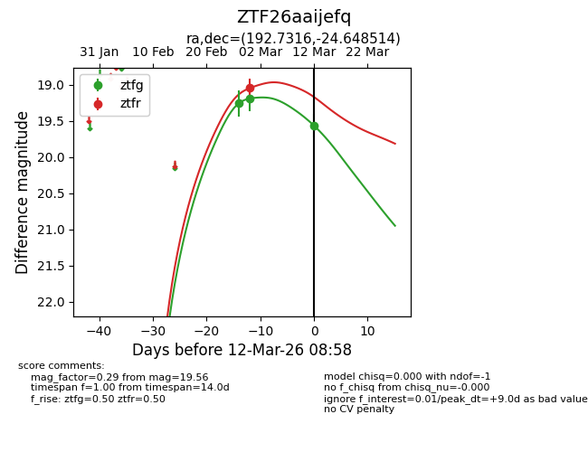
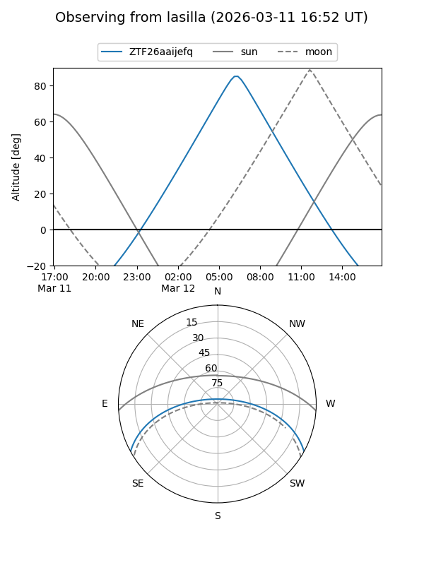
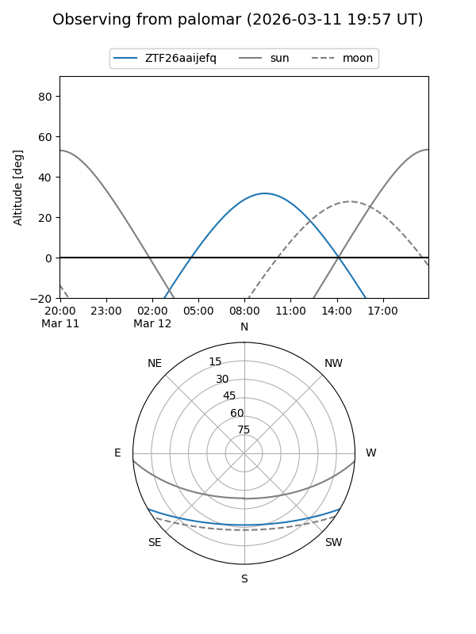
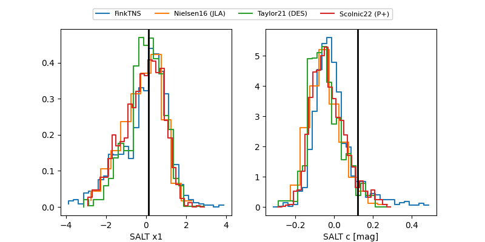

ZTF26aaijefq
Target ZTF26aaijefq at 2026-03-12 08:59
Aliases and brokers:
FINK: link
Lasair: link
ALeRCE: link
alt names
ZTF26aaijefq (ztf,fink_ztf)
Coordinates:
equatorial (ra, dec) = 192.7316,-24.64851
equatorial (HMS+DMS) = 12:50:55.58,-24:38:54.65
galactic (l, b) = (302.7840,+38.22309)
Flags:
Photometry:
last ztfg=19.56, ztfr=19.04
3 ztfg, 1 ztfr detections
Lightcurve

Visibility


Additional plots
